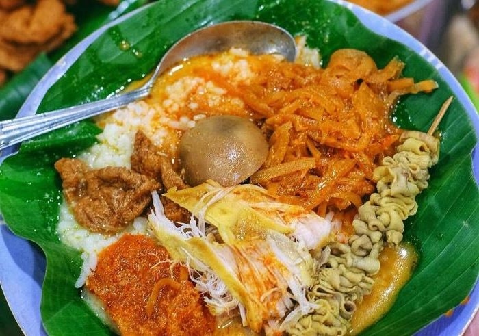
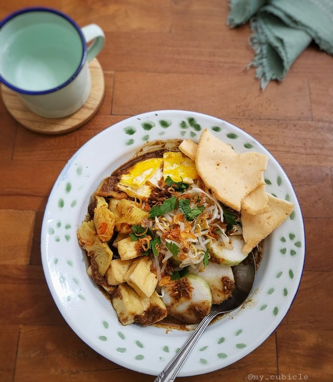
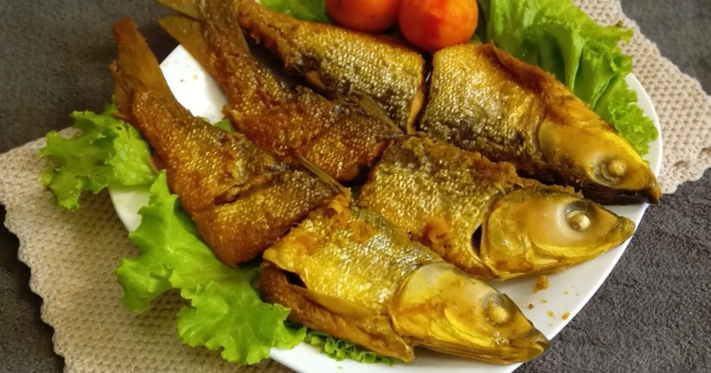

Warisan Abadi Kota Pesisir
🏛️ Tugu Muda: Monumen Pengorbanan
🥁 Dugderan: Festival Sambut Ramadan
🚪 Lawang Sewu: Mahakarya Arsitektur
Gerak, Musik, dan Simbol Budaya Pesisir
💃 Tari Semarang
🐒 Tradisi Sesaji Rewanda
🐴 Kesenian Kuda Lumping
Lima Pilar Wajib Coba Semarang
Lumpia Semarang
Akulturasi Kuliner. Lumpia adalah hidangan ikonik yang menunjukkan perpaduan budaya Tionghoa dan Jawa. Berisi rebung, daging ayam/udang, dan dibungkus kulit tipis. Tersedia versi basah dan goreng.
Nasi Ayam Semarang
Lezat Berkuah Santan. Mirip dengan Nasi Liwet Solo, namun disajikan dengan suwiran ayam, telur, krecek, dan disiram kuah santan kental yang gurih. Biasanya disajikan di atas pincuk daun pisang.
Tahu Gimbal
Petis Udang yang Khas. Makanan ini terdiri dari tahu goreng, gimbal (bakwan udang), lontong, dan kol, lalu disiram dengan bumbu kacang yang dicampur dengan **petis udang** yang kental dan manis, memberikan rasa yang unik di lidah.
Wingko Babat

Oleh-oleh Legendaris. Kudapan manis berbahan dasar kelapa muda, gula, dan tepung ketan. Meskipun namanya Babat (merujuk pada daerah asalnya), Wingko telah menjadi identitas kuliner dan oleh-oleh wajib dari Semarang.
Bandeng Presto
Durinya Lunak. Ikan bandeng yang dimasak dengan cara presto (tekanan tinggi) menggunakan bumbu khas, sehingga durinya menjadi sangat lunak dan dapat dimakan. Sering dijual dalam bentuk kemasan sebagai oleh-oleh.
Tempat Menginap Pilihan di Kota Lumpia
Hotel Bintang Lima:
Hotel Tentrem Semarang. Mewah dan terletak strategis, menawarkan fasilitas lengkap dan desain modern Jawa.
Dekat: Tugu Muda dan Stasiun Poncol.
Cek Detail →Hotel Sejarah (Kota Lama):
Hotel Dibya Puri. Salah satu hotel tertua di Semarang, memberikan pengalaman menginap dengan nuansa arsitektur kolonial yang kental.
Dekat: Kawasan Kota Lama dan Gereja Blenduk.
Cek Detail →Hotel Budget Terbaik:
Ibis Budget Semarang Tugu Muda. Pilihan hemat dengan lokasi super strategis, ideal untuk wisatawan yang fokus pada efisiensi biaya.
Dekat: Tugu Muda dan Lawang Sewu.
Cek Detail →Pilihan Keluarga & Bisnis:
PO Hotel Semarang. Menyediakan kamar yang luas dan fasilitas pertemuan yang memadai, cocok untuk liburan keluarga atau perjalanan bisnis.
Dekat: Paragon Mall dan pusat perbelanjaan.
Cek Detail →